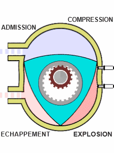
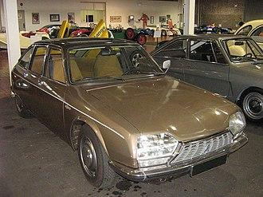
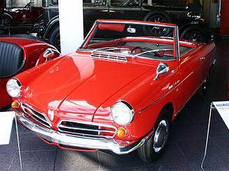
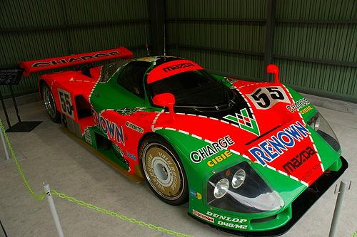

HISTOIRE DU MOTEUR ROTATIF :
Le brevet fut déposé par son inventeur Félix Wankel en 1929. Dans le moteur Wankel, les gaz accompagnent le mouvement du rotor, et font un tour complet en passant successivement par les quatre phases classiques : admission, compression, explosion et échappement.
FONCTIONNEMENT DU MOTEUR ROTATIF
Le principe du moteur à piston rotatif est identique à celui des moteurs à pistons « classiques » : compresser l'air et le carburant injecté, provoquer une combustion, qui produira une surpression motrice, puis évacuer les gaz brûlés, et recommencer le cycle.
Il y a aussi des différences, le moteur rotatif n'a pas besoin de soupape,
et chaque face du rotor agit comme un piston classique.
Ce qui evite le temps mort du moteur a piston classique cela leur confère généralement un rapport
puissance/cylindrée très élevé, surtout dans une plage de fonctionnement axée sur les hauts régimes.
Leur nombre de parties mobiles, généralement faible, les rend également plus simples d'entretien et moins sujets aux pannes.
Ils connaissent également moins de limites de régime, car ils ne présentent pas certaines des faiblesses des moteurs classiques,
dont les éléments entrent en contact lors d'un surrégime par exemple.
Au rayon des défauts, la conception a dû résoudre deux problèmes spécifiques qui restent sources de difficultés.
Le premier est l'étanchéité au niveau des arêtes du rotor en contact avec la chambre fixe,
d'autant plus ardue que ces arêtes passent dans des zones de températures différentes.
Ce problème réduit les possibilités de compression et conduit à privilégier un fonctionnement à taux de compression plus réduit,
compensé dans une certaine mesure par des rotation plus rapides,
mais conduisant tout de même à des couples relativement faibles à bas régime.
Le second, lié au premier, est la lubrification :
alors que dans un moteur classique l'huile peut être projetée à partir d'un carter dédié,
ici elle doit partager le même espace que le mélange à brûler. En cas de mauvaise lubrification,
l'usure au niveau des arêtes va fortement affecter le fonctionnement du moteur (étanchéité, taux de compression, consommation et perte de puissance).

DES VOITURES MOTEUR A PISTON ROTATIF
| Citroen GS Birotor | NSU Spider | Mazda RX-7 | Mazda RX-8 | Mazda 787b |
|---|---|---|---|---|
| 1973 - 1975 | 1964 - 1967 | 1978 - 2002 | 2003 — 2012 | 1990 - 1991 |
 |
 |
.jpg) |
 |